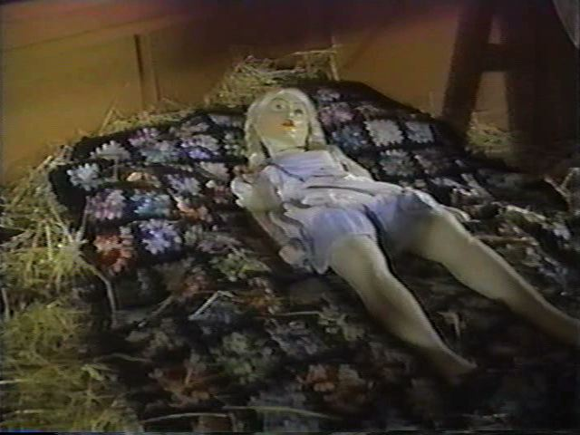

-
Paul McCarthy at Hauser & Wirth
by Stephen Squibb November 4, 2009
I recall quite vividly the discomfort with which my professor of video art introduced Paul McCarthy and Mike Kelley’s Heidi. A passionate Bill Viola fan, she approached Heidi as something to be endured, undoubtedly important but, at times, and for her at least, unwatchable. More recently I have come to appreciate the honesty of her presentation. Not because I find McCarthy’s work so much unwatchable, as it seems that this aspect of the work – its sheer visceral noxiousness – is too swiftly navigated by words like ‘challenging,’ and ‘difficult.’ Even the discussions, not infrequent, of the exploration of transgression at work in McCarthy’s oeuvre strike me as reducing too quickly the uniquely revolting power he wields with such assurance. In short, we seem to fly too quickly to the concept in this case, searching out any idea we can and fixating on it, clutching it between ourselves and the images he presents.
Though it’s hard to call such a survival strategy a mistake, it does seem to prevent recognition of the artist’s most effective manipulation of our facility of recognition. When, precisely, do we recognize the sausage as a penis? The ketchup as blood? Or any other mundane object as whatever unholy thing he appears to be using it as? This misrecognition is especially striking in the documentary images of his performances; here the mind, confronting one his signature tableau, immediately leaps to the most breathtaking and unsavory conclusions. For a moment, we find ourselves looking at an image of unimaginable horror, but then the slow reconstruction of what one is actually seeing. No, that is not a person, it’s a doll, and that is not some terrible mixture of fluid and excrement, but mustard and chocolate. And on and on until we can actually see both images at once, the one we thought we were looking at and the one we actually are. Who, we ask ourselves, taught us to see such things?
Now, this effect is not unique to McCarthy’s work, but he might be the best at achieving it. And not only in the artworld: I would put Heidi, Doctor et al up against anything as some of the most disturbing and terrifying pieces of moving image ever produced – excluding primary sources, obviously. So what is interesting about White Snow, the show opening presently at Hauser and Wirth, is that it is the only one in my recall that focuses solely on McCarthy’s drawings. In fact, walking in, I wasn’t entirely sure I was in the right place.
The drawings are divided into two groups. Upstairs there are smaller, black and white pencil works while downstairs live several oversize collage-drawings, some as high as ten feet. The theme, as you might have guessed, is Snow White’s inevitable desecration at the hands of several phallic-nosed dwarves, floating vulvas, and the artist himself, who puts ol’ Snow through her psychosexual, scatological paces.
The larger works, we are told, are performative, insofar as they were created through a process that included the artist ‘intermittently speaking aloud ‘in a sort of trance.’ From another artist this would sound quite slight, even bogus, but in McCarthy’s case we have seen this from him on camera, so it’s easy to imagine him at work in the manner described. Whether or not that makes the pieces themselves compelling is a more open question. They are large, and at times present a certain potency, but its hard to shake the feeling that McCarthy is out of his element here. We have seen this sort of thing before, many times, and better executed too. Minus the actual document of the performance, there isn’t a good reason for our interest. Perhaps this is why there is a minor sound installation, presumably of the aforementioned ‘intermittent speech,’ set up to evoke the specificity of this work’s making. Ultimately, it’s unconvincing. The jumble of cut-out genitalia, smears of red and brown, and occasional paper-towel tube jutting suggestively through the paper lack a visual or compositional element to compensate for their decided fatigue as transgressions.
Further, they are offered as ‘critiques of monumental painting and its aggressively male heroes…’ which is the latest in a string of absurdly counter-intuitive, ostensibly feminist positions attributed to the artist. Throughout his career McCarthy has lavished violence, sexual and otherwise, on images of women, apparently in the service of a critique of the same. However the assertion of criticality is not identical to its presence, and though there are undoubtedly important questions to be raised about the specific role of masculinity in Rauschenberg and de Kooning, one does wonder how, exactly, a ten-foot high visual rape of Snow White not only avoids inhabiting a similar paradigm, but calls it into question. If the answer is that, you know, said epic canvasses amounted to little more than a violently sexualized vision of a Disney princess, because large, popular and made by men; or that Snow White is here standing in for the subaltern subject, suitably violated by the Modernist narrative – then that answer is not only wrong, but offensive to those works with legitimately critical aspirations.
The pencil drawings fare better. Here McCarthy’s ideas and narrative are clearer and we get more of what he’s trying to do. It’s still not wholly compelling, as the artist limits his interest to the sexual possibilities of the fairy tale, but still, the work is more thoughtful. Many of the drawings are spare, evocative and play quite explicitly with Snow White’s appearance: sometimes she looks like herself, and sometimes she doesn’t. These moments of indeterminacy are effective at confusing just what role her signifier plays in all this. In the end, though, the sight of Snow fellating a dwarf is just not distinct enough from the dominant pop-culture cycles of self-appropriation to really be of lasting interest. Set against the artist’s own, and rapidly aging, explorations of similar material in Heidi, there’s not much new in this particular conversation.

{kind=link}
{kind=link}
{kind=link}
{kind=link}
{kind=link}